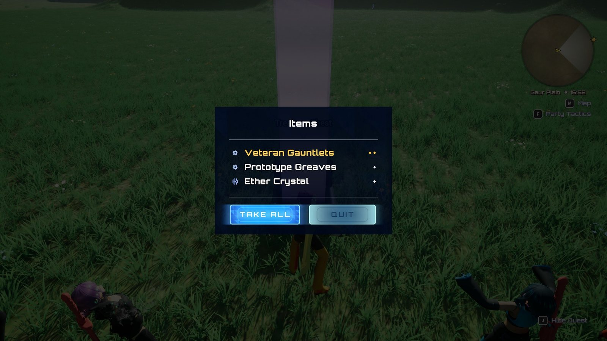

Loot¶
All · 12 min read

A chest's offer: Take All or Take None.
When an enemy dies it leaves a treasure chest where it fell. The chest's tier (Wooden, Silver or Gold) is decided at death, so you can see it on the ground; its contents are decided only when you open it, from the enemy's drop table. Opening shows a panel that asks you to take everything or nothing. Chests stay in the world until opened, across area changes and save and load. Separately, collectable orbs sit in the level and give their item when you walk into them. The idea that makes the rest make sense: a chest holds a drop table and a tier, never a list of items.
What you can change¶
- What an enemy drops, and how often each chest tier appears: Build a drop table.
- How rare an item is, and its colour: Set and style item rarity.
- A chest placed by hand, an orb to walk into: drag
BP_XenoCore_TreasureChestorB_XenoCore_CollectableOrbinto the level and fill in the settings in Settings. - How the chest looks and opens: the chest Blueprint's Presentation settings, or a child Blueprint using its three events (see Extending it).
How it fits together¶
| Piece | Class / sample asset | Job |
|---|---|---|
| Drop table (data asset) | Inventory/Loot/DA_XenoCore_Drops_Grunt, _Skirmisher, _Bulwark, _Brute (one per minion family), DA_XenoCore_Drops_Minion (base minion and dummy) |
Tier odds, and a pool of weighted items per tier |
| Enemy loot settings | Enemy Blueprint · Drop Table, Chest Class, Always Gold Chest, Chest Drop Delay | Which table, which chest, forced gold, reveal delay |
| Chest | Inventory/Loot/BP_XenoCore_TreasureChest |
Holds tier and table, rolls on open, offers the contents |
| Open ability | Inventory/Loot/GA_XenoCore_OpenChest |
Granted near a chest by Lyra's interaction system |
| Chest label | Inventory/Loot/W_XenoCore_ChestLabel |
Floating label near a closed chest |
| Popup | UserInterface/HUD/W_XenoCore_LootPopup |
Lists the items; Take All or Take None. Shown automatically when a chest opens |
| Collectable orb | Inventory/Collectables/B_XenoCore_CollectableOrb |
Walk-in pickup that respawns |
| Icons | UserInterface/Foundation/DA_XenoCore_ItemIcons |
Category glyphs on each popup row |
Drop table settings¶
| Setting | What it does |
|---|---|
| Gold Chance | Chance of a gold chest, checked first. Default 0.02 |
| Silver Chance | Chance of silver if gold did not land. Default 0.25. Otherwise wooden |
| Pools | One entry per tier (Wooden, Silver, Gold) |
| Pool › Min Items, Max Items | How many items a chest of that tier rolls. Default 1–2 |
| Pool › Entries › Item Def, Weight | Candidate items. Weights are relative, not percentages; 0 parks an entry without removing it |
| Pool › Entries › Min Level, Max Level | A level band: the entry only drops from an enemy inside it. The level is the dying enemy's, stored on the chest. 0 means no bound |
| Pool › No Duplicate Equipment | A piece of equipment comes out of one chest at most once. Materials still repeat. If the pool runs out of drawable entries, the chest holds fewer items rather than repeating one |
| Pool › Guarantee One Of Rarity | Empty by default. When set, a chest from this pool always holds at least one item that rare. If the roll found none, its last pick is redrawn from the qualifying entries. Xenoblade 1's silver and gold chests always hold one rare material |
Each item in a chest is rolled independently, so the same material can appear twice (equipment too, unless No Duplicate Equipment is on).
The sample tables give each minion family its own common and rare material, a silver chance between
18% and 34%, and level-banded armour in the gold pool: the Legendary Vanguard Plate only drops from a
level 10+ enemy. Gems are never in a chest; they come from quests and shops. To see what a table
really pays out, run XenoCore.Loot.Simulate <table> [level] [chests] in the console.
Each Item Def is a soft reference. Holding a drop table (every enemy and chest does) loads none of its items; only the items actually rolled load, when the chest is opened.
Chest tier and item rarity are separate. The tier is the chest, and its odds come from the drop table. Rarity belongs to each item; see Set and style item rarity.
They meet in three places:
- Each rarity's Lowest Chest Tier (Common → Wooden, Rare → Silver, Legendary → Gold). A drop table warns, but does not error, when an item sits in a lower pool than that.
- The chest beam, coloured by the rarity its tier stands for, so a gold chest glows Legendary purple. Turn this off with the chest's Use Rarity Beam Colour.
- The loot panel, which lists the rarest items first.
Lifecycle¶
At death. If the enemy has a Drop Table, it rolls the tier (gold if Always Gold Chest is
ticked), spawns its Chest Class on the floor where it died, turned to face the player, and tells
the chest its table, tier and the enemy's level. The chest hides itself for Chest Drop Delay
(2 s) so it does not appear in the middle of the death animation, and cannot be opened until then.
No Drop Table means no chest.
Squads. An enemy that belongs to an enemy spawner squad follows Xenoblade Chronicles' squad rule (the spawner's Squad Loot Rule, on by default):
- Only the last member killed drops a chest. The others drop nothing, and their loot is not added to it: a squad is worth one chest, not one per member.
- The chest is gold at three times the usual chance (the spawner's Squad Gold Multiplier,
3), and otherwise silver, never wooden. A table with no silver pool falls back to wooden. - Its contents come from the squad leader's drop table and level, whichever member died last. The leader is the first enemy of the spawner's first Members entry, so put the type whose loot the squad should give first.
Waiting. An unopened chest stays in the world. It has no timer and nothing despawns it, and it survives leaving the map and saving and loading. The save subsystem keeps a record for every map the party has visited:
| Chest | What is remembered | How it comes back |
|---|---|---|
| Dropped by an enemy, unopened | Chest class, position, drop table, tier, source level | Respawned when the map begins play. It still rolls its contents on open, so a reload gives a new roll |
| Placed in the level | Only what has happened to it: emptied, or opened with items left in it | The level brings the actor back; on its own BeginPlay it asks the save for its record, then removes itself or restores its leftovers |
| Opened, holding items the bag had no room for | The leftover items themselves, not a table | Offers exactly those items again, never a re-roll |
Leaving a map sweeps its dropped chests into the record; a save writes every map's records; a load replaces them; a new game clears them. Placed chests report their own changes as they happen, so a World Partition cell that streams out and back in is still correct.
Opening. Walk up to a chest and the interact prompt offers its verb. Pressing it opens the
chest: the lid plays, the chest rolls its contents now from the table and tier, and after the
lid the XenoCore.Loot.Message.ChestOpened message announces the offered items (see
Events). Nothing has entered the bag yet.
Choosing. W_XenoCore_LootPopup appears, focused on Take All:
- Take All adds each item to the party bag, one at a time, and every menu updates. Anything over an item's Max Carried stays in the chest: the panel shows those rows in Rejected Colour with "(no room)" after them, and the hint line reads "No room for the items in red. They will stay in the chest." The chest stays open-able until it is empty, and offers exactly the leftovers next time.
- Take None discards everything the chest offered, leftovers included, and the chest is finished.
Back (B or Escape) does nothing on this panel: you must answer it. While it is up, the interact button belongs to the panel and the character cannot jump.
After. A chest that has nothing left to offer fades and removes itself after Despawn Delay.
Collectable orbs. Walking within Collect Radius of an orb adds its Item To Grant to the
bag, broadcasts XenoCore.Collectable.Message.Collected, and
hides the orb. If Respawns is on, it comes back after Respawn Seconds (300).
Settings¶
| Setting | Where it lives | What it does |
|---|---|---|
| Drop table settings | Drop table asset | See the table above |
| Drop Table, Chest Class, Chest Spawn Height | Enemy Blueprint › XenoCore › Loot | Loot source, chest Blueprint, clearance above the floor |
| Always Gold Chest | Enemy Blueprint › XenoCore › Loot | Force gold. Can be set per placement |
| Chest Drop Delay | Enemy Blueprint › XenoCore › Enemy › Loot | Reveal delay. Can be set per placement |
| Drop Table, Tier, Source Level | A chest placed in a level › XenoCore › Loot | For hand-placed chests. Source Level is the level the table's bands roll against |
| Lid Open Angle, Lid Open Time, Flip Hinge Side, Front Yaw Offset, Lid Open On Spawn | Chest Blueprint › XenoCore › Loot › Presentation | The lid |
| Beam Height, Beam Width, Beam Intensity, Beam Opacity, Beam Fade Time | Chest Blueprint › XenoCore › Loot › Presentation | The tier-coloured light beam |
| Despawn Delay, Offer Delay After Lid | Chest Blueprint › XenoCore › Loot › Presentation | Timing after the answer and before the popup |
| Label Height, Label Range | Chest Blueprint › XenoCore › Loot | The floating label |
| On Tier Set, On Opened, On Resolved | Chest Blueprint events | Your own tier colours, sounds and effects |
| Row Colour, Row Font Size, Rejected Colour | Popup widget › XenoCore › Loot | Popup look; Rejected Colour marks the "(no room)" rows |
| Item To Grant, Collect Radius, Respawns, Respawn Seconds, Orb Effect, Collect Sound | Placed orb › XenoCore › Collectable | The orb |
Fails silently: a chest tier with no pool opens empty
Every tier a chest can roll needs its own pool with entries. A missing pool gives an empty chest rather than falling back to another tier. Only a warning in the Output Log says so. The sample minion can roll all three tiers, so its table needs all three.
Fails silently: renaming a placed chest resets it
A hand-placed chest's save record is keyed by the actor's name in the level. Rename it, delete and re-place it, or duplicate the level, and existing saves no longer match it: a chest the player emptied comes back full, and nothing is logged. Settle placed chests' names before you ship, and do not rename them in an update.
Fails silently: the chest must answer the interaction trace channel
A custom chest whose collision does not respond to Lyra_TraceChannel_Interaction is never found:
no prompt and no way to open it, with nothing logged. Build chests from BP_XenoCore_TreasureChest.
Fails silently: the chest's open ability must be the exact Blueprint
The chest's interaction option names GA_XenoCore_OpenChest. Lyra finds that ability by exact
class, so pointing it at a parent class makes the option disappear.
Fails silently: an orb on an interaction collision profile
An orb's volume must overlap pawns only. On an Interactable_* profile, the chest's interact
prompt starts offering the orb.
Extending it¶
- Your own drop table: duplicate
DA_XenoCore_Drops_Minioninto your own folder (Content/MyGame/Loot), fill all three pools, and set it on your enemy. See Drop table. - A hand-placed chest: drag
BP_XenoCore_TreasureChestinto a level and set its Drop Table, Tier and Source Level. - A different chest look: right-click
BP_XenoCore_TreasureChest, choose Create Child Blueprint Class, and use its three events (On Tier Set, On Opened, On Resolved). Do not build a chest from a plain Actor: only the shipped chest can be opened with the interact button. - Not built yet: taking specific items from a chest (only Take All and Take None exist). Outside a spawner squad, every enemy with a table drops its own chest.
- Do not build a pickup on Lyra's own pickup system: it puts items in the bag behind XenoCore's back, so carry limits are skipped.
For programmers: classes
Drop table UXenoCoreDropTable; chest AXenoCoreTreasureChest (C++ because Lyra's
IInteractableTarget cannot be implemented in Blueprint); popup UXenoCoreLootPopupBase, shown by
UXenoCoreLootPopupSubsystem on XenoCore.Loot.Message.ChestOpened; orb
AXenoCoreCollectableOrb. The chest answers Lyra_TraceChannel_Interaction and grants
GA_XenoCore_OpenChest; the popup blocks jumping with Status.XenoCore.Looting. Do not
implement Lyra's IPickupable: it adds to the bag directly (only the bag watcher announces it, and carry caps are skipped) and passes a
stack count, which the one-entry-per-item bag does not use.
Why it's built this way¶
For programmers
- Roll on open. Deciding contents at open rather than at death is the genre's behaviour, and it means a chest only needs a table pointer and a tier.
- Chests persist, so no "encounter ended" signal is needed to decide when to hand out loot.
- The drop table is a data asset, not a component: it is static, shared by every enemy of a type, and read once, at death.
- The chest is C++ because Lyra's
IInteractableTargetcannot be implemented in Blueprint. It is shaped on ShooterCore'sALyraWorldCollectable. - The popup cannot be backed out of because closing it without an answer would leave a rolled, opened chest with no way back in. It consumes the back action rather than ignoring it, so back reaches nothing underneath either.
- Everything enters the bag through the inventory statics, so menus, badges and quests update.